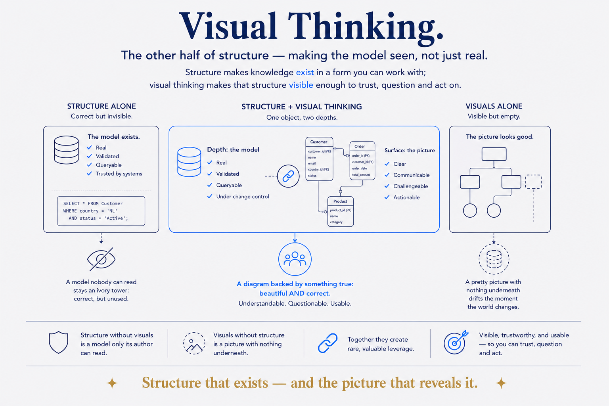

The other half of structure — making the model seen, not just real. Structure makes knowledge exist; visual thinking makes it visible enough to trust, question and act on.

> 🔗 Sister note: a knowledge-work framing of this concept lives in the SBM library (`W:/systems/concepts/visual-thinking/`). This file is the data/modelling framing — keep both in step when editing.
Structure Beats Magic is usually about the invisible half — the model beneath your knowledge. But a structure nobody can see does half its job. Visual thinking is the other half, and for a data modeller it was never separate: the core artefact of the trade is a diagram, and the conceptual model the business signs off on is a drawing. Structure and its picture are the same object seen at different depths. State it plainly: structure makes knowledge exist in a form you can work with; visual thinking makes that structure visible enough to trust, question and act on. Each is weak alone — structure without visualisation is a model only its author can read (ivory-tower); visualisation without structure is a pretty picture with nothing underneath that drifts the moment the world changes. Put them together and you get the rare, valuable thing: a structure that's real (queryable, validated) AND visible (a diagram anyone can read and challenge). Where Structure Made Visible is the capability of doing it, Visual Thinking is the thesis that it's half the craft.